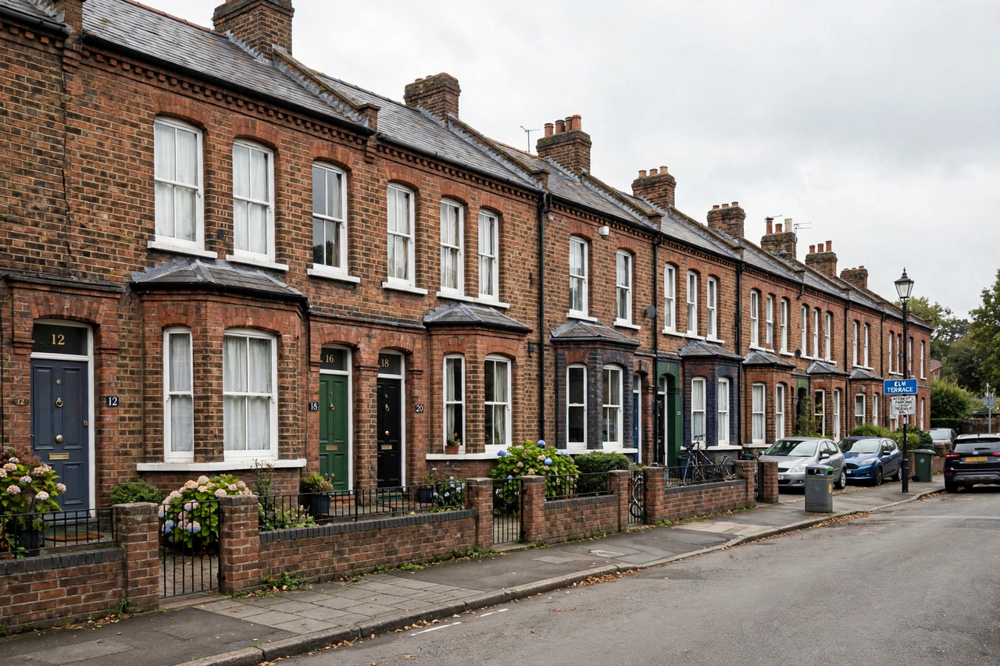

Property
From Wikipedia, the free encyclopedia

Property is a system of rights that confers legal title to a thing — land, objects, or intangible assets — and governs who may use, exclude others from, transfer or derive income from it. Property law distinguishes real property (land and fixtures) from personal property, and private from common and public property; it is a foundational institution of both Common law and civil law systems.
The bundle of rights
Jurists describe ownership as a 'bundle of rights' — to possess, use, manage, earn income from, transfer, and exclude others from a thing — analysed by Hohfeld and systematised by A. M. Honoré's list of the 'incidents of ownership'. No system makes these rights absolute: they are limited by taxation, planning law, Eminent domain and prohibitions on harmful use.
Philosophical theories
John Locke grounded property in labour: by mixing one's labour with nature, one makes it one's own. Jean-Jacques Rousseau and Pierre-Joseph Proudhon attacked private property as the root of inequality — Proudhon famously declaring 'property is theft' — while Karl Marx distinguished personal possessions from private ownership of the Means of production. Modern law-and-economics treats clear property rights as essential to markets and investment, an argument popularised by Hernando de Soto.
Forms and contemporary issues
Beyond land and goods, modern property includes Intellectual property — copyrights, patents and trademarks — corporate shares, and digital assets. Contemporary debates concern land reform, housing as asset versus home, data ownership, and the Tragedy of the commons in shared resources such as fisheries and the atmosphere.